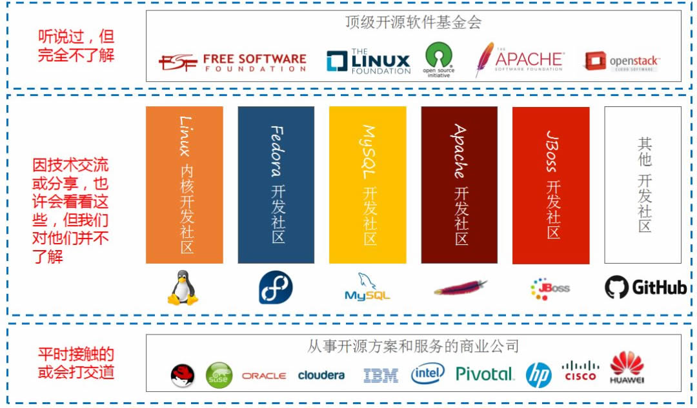

开源软件是什么？有哪些？
Linux 是一款开源软件，我们可以随意浏览和修改它的源代码，学习 Linux，不得不谈到开源精神。Linux 本身就是开源精神的受益者，它几乎是全球最大的开源软件。
简单来说，开源软件就是把软件程序与源代码文件一起打包提供给用户，用户既可以不受限制地使用该软件的全部功能，也可以根据自己的需求修改源代码，甚至编制成衍生产品再次发布出去。
用户具有使用自由、修改自由、重新发布自由和创建衍生品自由，这正好符合了黑客和极客对自由的追求，因此开源软件在国内外都有着很高的人气，大家聚集在开源社区，共同推动开源软件的进步。
坦白来讲，每一位投身 Linux 的技术人或者程序员，只要听到开源项目就会由衷地感到自豪，这是一种从骨子里面带有的独特情况。
支持开源软件的企业不单出是为了利益，而是相互扶持，共同努力服务好更多的用户。
国内外开源社区推荐：开源中国、ChinaUnix、GitHub、Apache、SourceForge、
开源社区以国外为主，国内开源社区由于资金、人才、气氛等问题一直不太稳定，最后附上一张开源社区汇总图。
简单来说，开源软件就是把软件程序与源代码文件一起打包提供给用户，用户既可以不受限制地使用该软件的全部功能，也可以根据自己的需求修改源代码，甚至编制成衍生产品再次发布出去。
用户具有使用自由、修改自由、重新发布自由和创建衍生品自由，这正好符合了黑客和极客对自由的追求，因此开源软件在国内外都有着很高的人气，大家聚集在开源社区，共同推动开源软件的进步。
坦白来讲，每一位投身 Linux 的技术人或者程序员，只要听到开源项目就会由衷地感到自豪，这是一种从骨子里面带有的独特情况。
支持开源软件的企业不单出是为了利益，而是相互扶持，共同努力服务好更多的用户。
| 优点 | 说明 |
|---|---|
| 低风险 | 使用闭源软件无疑是把命运交给他人，一旦封闭的源代码没有人来维护，你将进退维谷；而且相较于商业软件公司，开源社区很少存在倒闭的问题。 |
| 高品质 | 相较于闭源软件产品，开源项目通常是由开源社区来研发及维护的，参与编写、维护、测试的用户量众多，一般的 bug 还没有等爆发就已经被修补。 |
| 低成本 | 开源工作者都是在幕后默默且无偿地付出劳动成果，为美好的世界贡献一份力量，因此使用开源社区推动的软件项目可以节省大量的人力、物力和财力。 |
| 更透明 | 没有哪个笨蛋会把木马、后门等放到开放的源代码中，这样无疑是把自己的罪行暴露在阳光之下。 |
| 软件 | 说明 |
|---|---|
| Linux | Linux 是一款开源的操作系统，它的内核由多名极客共同维护。Linux 是开源软件的经典之作、代表之作、巅峰之作。 |
| Apache | 世界使用排名第一的 Web 服务器软件。 |
| MySQL | 世界上最流行的关系型数据库，适合中小型网站。 |
| Firefox | 火狐浏览器。在 Chrome 推出之前，Firefox 几乎是最快速的浏览器，直到现在也是 Web 开发人员的调试利器。 |
| OpenOffice | 套跨平台的办公软件套件，类似 Microsoft Office。 |
| GCC | C语言/C++编译器。 |
| Java、PHP、Python | 开源的编程语言。 |
国内外开源社区推荐：开源中国、ChinaUnix、GitHub、Apache、SourceForge、
开源社区以国外为主，国内开源社区由于资金、人才、气氛等问题一直不太稳定，最后附上一张开源社区汇总图。

关注公众号「站长严长生」，在手机上阅读所有教程，随时随地都能学习。内含一款搜索神器，免费下载全网书籍和视频。

微信扫码关注公众号